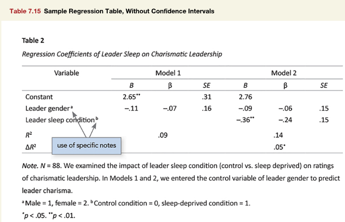

![]()
library(apa7)
library(flextable)
library(ftExtra)
library(tidyverse)
library(easystats)
set_flextable_defaults(theme_fun = theme_apa,
font.family = "Times New Roman")Making tables in APA style (Part 15 of 24)
In this 24-part series, each of the tables in Chapter 7 of the Publication Manual of the American Psychological Association (7th Edition) is recreated with apa7, flextable, easystats, and tidyverse functions.
NoteHighlights
- Automatic formatting of
lm(linear model) analyses withapa_performanceandapa_compare_performance.
Figure 1
Screenshot of the APA Manual’s Table 7.15

I love the easystats ecosystem. It provides a coherent framework for data-analysts to process and display statistical analyses. It makes so many previously tedious things simple. However, it was not specifically designed for the final display of APA tables. The apa7 package has a few functions and features that help process the output of easystats functions to make them table-ready.
First, lets simulate some data that resembles the data underlying the models in Figure 1, and create regression models for Models 1 and 2.
set.seed(1)
# sample size
n <- 88
# simulated data
d <- tibble(
leader_gender = sample(0:1, n, replace = TRUE),
leader_sleep_condition = sample(0:1, 88, replace = TRUE),
charisma = 2.76 - .09 * leader_gender -
.36 * leader_sleep_condition +
rnorm(n, sd = 0.5))
# Models 1 and 2
m1 <- lm(charisma ~ leader_gender, data = d)
m2 <- lm(charisma ~ leader_gender + leader_sleep_condition, data = d)The parameters::parameters function from the easystats ecosystem displays information about regression predictors.
parameters(m2) Parameter | Coefficient | SE | 95% CI | t(85) | p
-----------------------------------------------------------------------------
(Intercept) | 2.79 | 0.08 | [ 2.62, 2.95] | 33.17 | < .001
leader gender | -0.20 | 0.10 | [-0.40, 0.00] | -1.96 | 0.054
leader sleep condition | -0.34 | 0.10 | [-0.55, -0.14] | -3.37 | 0.001
Uncertainty intervals (equal-tailed) and p-values (two-tailed) computed
using a Wald t-distribution approximation.That is a really nice display. However, if we convert it directly with flextable, we get something far less polished.
parameters(m2) |>
flextable()Parameter | Coefficient | SE | CI | CI_low | CI_high | t | df_error | p |
|---|---|---|---|---|---|---|---|---|
(Intercept) | 2.79 | 0.08 | 0.95 | 2.62 | 2.95 | 33.17 | 85 | 0.00 |
leader_gender | -0.20 | 0.10 | 0.95 | -0.40 | 0.00 | -1.96 | 85 | 0.05 |
leader_sleep_condition | -0.34 | 0.10 | 0.95 | -0.55 | -0.14 | -3.37 | 85 | 0.00 |
As it turns out, the output of the parameters function undergoes a fair bit of processing before it prints. The output is a data.frame with a parameters_model class and many attributes that can be used by the easystats formatting functions. If we want to see the underlying data, we can convert the output to a data.frame or tibble.
parameters(m2) |>
as_tibble()# A tibble: 3 × 9
Parameter Coefficient SE CI CI_low CI_high t df_error p
<chr> <dbl> <dbl> <dbl> <dbl> <dbl> <dbl> <int> <dbl>
1 (Intercept) 2.79 0.0840 0.95 2.62 2.95 33.2 85 2.05e-50
2 leader_gender -0.200 0.102 0.95 -0.402 0.00312 -1.96 85 5.36e- 2
3 leader_sleep… -0.344 0.102 0.95 -0.547 -0.141 -3.37 85 1.13e- 3If we really want just the output of parameters as it displays, we use the insight::format_table function.
parameters(m2, ci = .95) |>
insight::format_table() Parameter Coefficient SE 95% CI t(85) p
1 (Intercept) 2.79 0.08 [ 2.62, 2.95] 33.17 < .001
2 leader gender -0.20 0.10 [-0.40, 0.00] -1.96 0.054
3 leader sleep condition -0.34 0.10 [-0.55, -0.14] -3.37 0.001 This gets us closer to APA style, but not quite all way there. We would like things to be nearly automatic and yet be able to fine-tune the output. Behold!
apa_parameters(m2) # A tibble: 3 × 6
Variable `*B*` `*SE*` `β` `*t*(85)` `*p*`
<chr> <chr> <chr> <chr> <chr> <chr>
1 Constant 2.79 0.08 .00 33.17 <.001
2 Leader Gender −0.20 0.10 −.20 −1.96 .05
3 Leader Sleep Condition −0.34 0.10 −.34 −3.37 .001The apa_parameters function is a wrapper around the parameters function with defaults that produce APA style output via markdown syntax. The columns are decimal aligned, statistics are italicized, the intercept is called a “Constant”, and the variable names are printed in title case.
Applying apa_flextable to the output gives us perfect APA style:
apa_parameters(m2) |>
apa_flextable() Variable | B | SE | β | t(85) | p |
|---|---|---|---|---|---|
Constant | 2.79 | 0.08 | .00 | 33.17 | <.001 |
Leader Gender | −0.20 | 0.10 | −.20 | −1.96 | .05 |
Leader Sleep Condition | −0.34 | 0.10 | −.34 | −3.37 | .001 |
The apa_format_columns function and a few others like apa_parameters, apa_performance, and apa_compare_performance can process the output of the lm function.
Getting the output of apa_parameters and apa_compare_performance into the same table requires a rather complex process. Eventually I’d like to automate some of these steps.
# pf <- column_formats()
# pf$SE@header <- "*SE*"
m <- list(`Model 1` = m1,
`Model 2` = m2)
d_parameters <- apa_parameters(
m,
predictor_parameters = c(
"Coefficient",
"Std_Coefficient",
"SE"))
d_performance <- apa_performance_comparison(
m,
metrics = c("R2", "deltaR2"),
starred = "deltaR2") |>
pivot_longer(-Model, names_to = "Variable") |>
mutate(Model = paste0(Model, "_β")) |>
pivot_wider(names_from = Model)
d_parameters |>
pivot_wider_name_first(
id_cols = Variable,
names_from = Model,
values_from = 3:5) |>
mutate(Variable = str_to_sentence(Variable)) |>
add_row(d_performance) |>
mutate(across(-Variable, \(x) align_chr(
x,
center = "\\.",
side = "left",
NA_value = "") |>
star_balance())) |>
apa_flextable(no_format_columns = Variable) |>
align(j = 1, align = "left") |>
flextable::add_footer_lines(values = as_paragraph_md("*Note*. *N* = 88. We examined the impact of leader sleep condition (control vs. sleep deprived) on ratings of charismatic leadership. In Models 1 and 2, we entered the control variable of leader gender to predict leader charisma.")) |>
footnote(i = 2,
j = 1,
value = as_paragraph("Male = 1, female = 2. "),
ref_symbols = "a ") |>
footnote(i = 3,
j = 1,
value = as_paragraph(
"Control condition = 0, sleep-deprived condition = 1"),
ref_symbols = "b ",
inline = T,
sep = ".") |>
add_footer_lines(
values = as_paragraph_md("\\* *p* < .05. \\*\\* *p* < .01.")) |>
align(align = "left", part = "footer")Table 1
Regression Coefficients of Leader Sleep on Charismatic Leadership
Variable | Model 1 | Model 2 | |||||
|---|---|---|---|---|---|---|---|
B | β | SE | B | β | SE | ||
Constant | 2.65 | .00 | 0.08 | 2.79 | .00 | 0.08 | |
Leader gendera | −0.24 | −.23 | 0.11 | −0.20 | −.20 | 0.10 | |
Leader sleep conditionb | −0.34 | −.34 | 0.10 | ||||
R2 | .06 | .17 | |||||
ΔR2 | .11** | ||||||
Note. N = 88. We examined the impact of leader sleep condition (control vs. sleep deprived) on ratings of charismatic leadership. In Models 1 and 2, we entered the control variable of leader gender to predict leader charisma. | |||||||
a Male = 1, female = 2. b Control condition = 0, sleep-deprived condition = 1. | |||||||
* p < .05. ** p < .01. | |||||||
Citation
BibTeX citation:
@misc{schneider2025,
author = {Schneider, W. Joel},
title = {Recreating {APA} {Manual} {Table} 7.15 in {R} with Apa7},
date = {2025-09-25},
url = {https://wjschne.github.io/posts/apatables/apa715.html},
langid = {en}
}
For attribution, please cite this work as:
Schneider, W. J. (2025, September 25). Recreating APA Manual Table 7.15
in R with apa7. Schneirographs. https://wjschne.github.io/posts/apatables/apa715.html